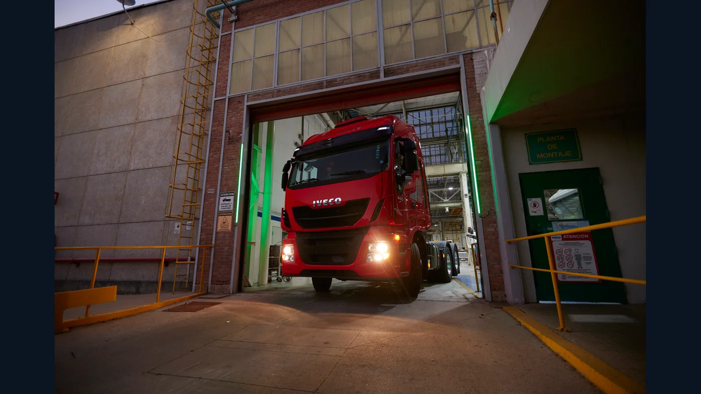

¿Cuál fue el camión más vendido en Argentina entre 2020 y 2025? La respuesta cambia menos de lo que podría esperarse: el IVECO Tector 170E encabezó cinco cierres anuales consecutivos; en 2025, el primer puesto pasó al IVECO Stralis. El dato se basa en patentamientos de unidades 0 km por modelo, no en ventas de usados, vehículos en circulación ni preferencias declaradas por los transportistas.
Para comparar años usamos los informes de cierre de SIOMAA/ACARA en la categoría comerciales pesados. Esa categoría de origen también contiene ómnibus, pero los ganadores que identificamos aquí son camiones. No mezclamos pick-ups, furgones ni chasis de colectivo con el ranking de carga. Las cifras son las de los informes anuales publicados al cierre de cada período, salvo 2020, para el que tomamos la revisión mostrada en el informe de diciembre de 2021 y señalamos el dato preliminar original.
2020: Tector 170E28, líder en el año de la pandemia
El cierre difundido en diciembre de 2020 ubicó al IVECO Tector 170E28 primero con 880 patentamientos, por delante del Volkswagen Constellation 17.280 (552) y el Mercedes-Benz Accelo 815 (497). Un informe posterior de SIOMAA, publicado al terminar 2021, revisó el acumulado 2020 del renglón “IVECO 170 E” a 1.100 unidades. Por eso mostramos 1.100 en el resumen y no ocultamos la diferencia con la noticia contemporánea.
Lo que no cambia entre ambas fuentes es el nombre del ganador. El año estuvo atravesado por cierres y alteraciones de actividad; las cifras de patentamiento describen registros de vehículos, no permiten atribuir por sí solas la elección de los compradores a una causa concreta.
2021: 1.784 Tector 170E patentados
El informe de diciembre de 2021 registró 1.784 unidades bajo “IVECO 170 E”. La distancia con el siguiente camión de la lista fue amplia: el Mercedes-Benz Accelo 815 acumuló 770. A diferencia de la marca más patentada, que fue Mercedes-Benz, el modelo individual más registrado fue el Tector. Esa distinción evita confundir el liderazgo de una marca con el de un vehículo concreto.
El Tector de esta franja es un camión orientado a trabajos de distribución y transporte regional. Pero una denominación comercial puede abarcar carrozados, motorizaciones y configuraciones diferentes; el ranking no detalla qué equipamiento eligió cada comprador.
2022: el máximo de la serie, con 2.079 unidades
En el informe de diciembre de 2023, que conserva la columna comparativa del año anterior, el IVECO 170 E figura con 2.079 patentamientos de 2022. Es el valor más alto de esta serie de seis cierres. La cobertura del informe anual de 2022 también lo identificó como líder de los pesados. No significa que se vendieran 2.079 unidades de una única versión mecánica: es el renglón de modelo utilizado por la estadística.
Que 2022 sea el pico no demuestra automáticamente que fuera el año más fácil para operar una flota. Una compra registrada responde a disponibilidad, decisiones previas, financiación y necesidades de trabajo, factores que las tablas no separan. El dato sí muestra la magnitud de la presencia comercial del Tector durante ese período.
2023: el Tector sigue primero con 1.684
SIOMAA publicó 1.684 registros de IVECO 170 E en 2023. El Mercedes-Benz Atego 1729 S quedó segundo con 741 y el Accelo 815 tercero con 690. El liderazgo del modelo ocurrió en un mercado de pesados más pequeño que el del año anterior: el total de la categoría bajó, según el mismo informe.
IVECO relacionó públicamente la popularidad de la familia Tector con su variedad de aplicaciones, desde carga general hasta tareas agropecuarias y servicios. Esa es una explicación comercial del fabricante, no una encuesta independiente de motivos de compra. En talleres y repuesteras, esa amplitud refuerza la necesidad de identificar chasis y versión antes de ofrecer una pieza.
2024: otra victoria del 170E, ahora con 1.360
El informe de diciembre de 2024 anotó 1.360 unidades para el IVECO 170 E y volvió a situarlo en la cima de los modelos pesados. El Atego 1729 S acumuló 979, bastante por detrás. La misma tabla muestra que el Stralis ya había crecido a 589 patentamientos: todavía no lideraba, pero su avance anticipaba una disputa diferente al año siguiente.
El número de 2024 aparece como 1.363 en la columna comparativa de diciembre de 2025. Son tres registros de diferencia, compatibles con una revisión posterior de la base. Para esta nota mantenemos 1.360, la cifra del cierre original de 2024, y dejamos indicada la actualización.
2025: el Stralis cambia al ganador por 18 camiones

El cierre de 2025 colocó al IVECO Stralis primero con 1.183 patentamientos. El renglón “IVECO 170 E” cerró con 1.165: una diferencia de apenas 18 unidades. Por eso, aunque terminó una racha de cinco años del Tector, no corresponde hablar de un desplome de ese modelo. Ambos siguieron muy próximos en el registro anual.
El Stralis pertenece a una clase de camión distinta de la del Tector 170E. Compararlos como si cumplieran exactamente la misma misión sería engañoso. Además, el informe de 2025 separa “IVECO 170 E” de otro renglón llamado “IVECO TECTOR”, que acumuló 956 unidades. No sumamos esas filas ni las tratamos como una sola versión porque el informe las presenta como modelos diferentes.
Qué significa realmente “el más vendido”
En este artículo “vendido” funciona como lenguaje cotidiano para patentado nuevo en Argentina durante el año calendario. Un patentamiento no revela el precio pagado ni si el camión ya comenzó a trabajar. Tampoco cuenta unidades usadas, reempadronamientos o toda la familia Tector si la base la divide en varias denominaciones.
Los informes pueden revisar registros después del cierre. La diferencia entre las 880 unidades de la primera cobertura de 2020 y las 1.100 de la comparación publicada un año después es especialmente importante; en 2024, el ajuste visible de 1.360 a 1.363 es pequeño. Presentar una cifra sin fecha de corte puede generar contradicciones aparentes. Por eso identificamos el origen de cada número y priorizamos la conclusión estable: cinco liderazgos del 170E y uno del Stralis.
Una lectura útil para transportistas y talleres
La frecuencia de un modelo en el mercado puede influir en el interés por su posventa, pero no garantiza que cualquier repuesto esté disponible ni que todas las unidades compartan piezas. Para cotizar con precisión hacen falta VIN, año, motor, configuración de ejes y número de pieza cuando exista. La familia Tector y la Stralis tienen trabajos y componentes distintos, y dentro de cada una hay evoluciones técnicas.
El balance 2020-2025 no cuenta la historia completa del transporte argentino, pero sí deja una imagen nítida de este período: un Tector 170E muy persistente en los patentamientos y un Stralis que logró superarlo al final por un margen mínimo. Más que buscar un “campeón eterno”, conviene leer cada ranking como una fotografía anual, con su categoría, su corte de datos y sus límites.